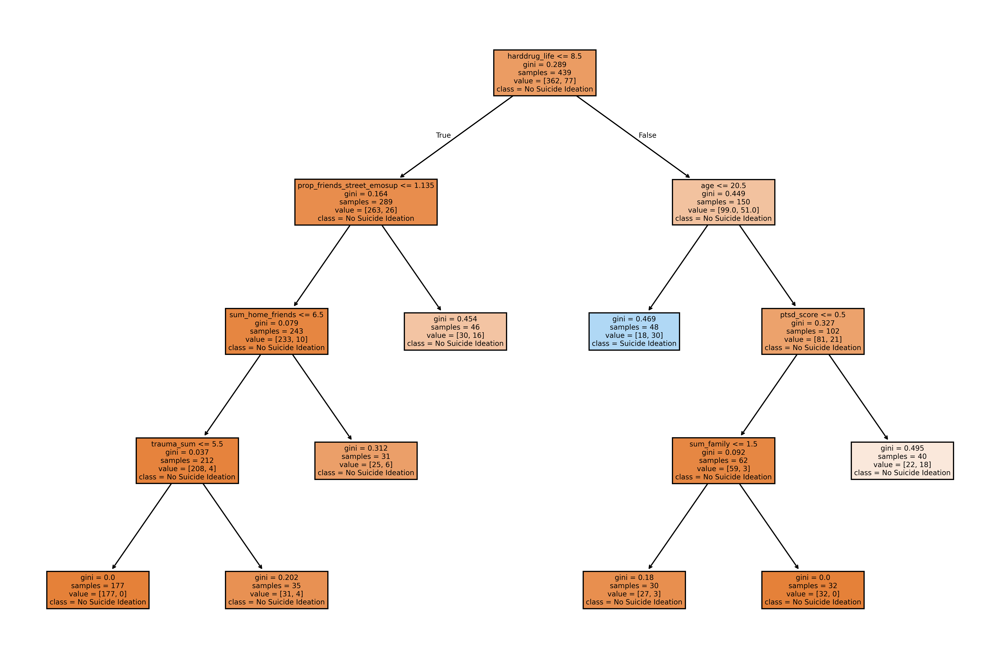

DEPTHS = list(range(3, 13))
MIN_SAMPLES = [3, 5, 10, 30, 50]
NUM_BOOTSTRAPS = 25
DATA_PATH = "../data/DataSet_Combined_SI_SNI_Baseline_FE.csv"
FEATURE_SETS: Dict[str, List[str]] = {
"suicidea": [
"age", "gender", "sexori", "raceall", "trauma_sum", "cesd_score", "harddrug_life", "school", "degree", "job", "sex", "concurrent", "exchange", "children", "weapon", "fight", "fighthurt", "ipv", "ptsd_score", "alcfirst", "potfirst", "staycurrent", "homelage", "time_homeless_month", "jail", "jailkid", "gettherapy", "sum_alter", "sum_family", "sum_home_friends", "sum_street_friends", "sum_unknown_alter", "sum_talk_once_week", "sum_alter3close", "prop_family_harddrug", "prop_friends_harddrug", "prop_friends_home_harddrug", "prop_friends_street_harddrug", "prop_alter_all_harddrug", "prop_enc_badbehave", "prop_alter_homeless", "prop_family_emosup", "prop_friends_emosup", "prop_friends_home_emosup", "prop_friends_street_emosup", "prop_alter_all_emosup", "prop_family_othersupport", "prop_friends_othersupport", "prop_friends_home_othersupport", "prop_friends_street_othersupport", "prop_alter_all_othersupport", "sum_alter_staff", "prop_object_badbehave", "prop_enc_goodbehave", "prop_alter_school_job", "sum_alter_borrow"],
"suicattempt": [
"age", "gender", "sexori", "raceall", "trauma_sum", "cesd_score", "harddrug_life", "school", "degree", "job", "sex", "concurrent", "exchange", "children", "weapon", "fight", "fighthurt", "ipv", "ptsd_score", "alcfirst", "potfirst", "staycurrent", "homelage", "time_homeless_month", "jail", "jailkid", "gettherapy", "sum_alter", "prop_family", "prop_home_friends", "prop_street_friends", "prop_unknown_alter", "sum_talk_once_week", "sum_alter3close", "prop_family_harddrug", "prop_friends_harddrug", "prop_friends_home_harddrug", "prop_friends_street_harddrug", "prop_alter_all_harddrug", "prop_enc_badbehave", "prop_alter_homeless", "prop_family_emosup", "prop_friends_emosup", "prop_friends_home_emosup", "prop_friends_street_emosup", "prop_alter_all_emosup", "prop_family_othersupport", "prop_friends_othersupport", "prop_friends_home_othersupport", "prop_friends_street_othersupport", "prop_alter_all_othersupport", "sum_alter_staff", "prop_object_badbehave", "prop_enc_goodbehave", "prop_alter_school_job", "sum_alter_borrow"],
}
MODEL_PARAMS = {
"suicidea": dict(min_samples_leaf=10, min_samples_split=20, max_depth=4),
"suicattempt": dict(min_samples_leaf=10, min_samples_split=30, max_depth=4),
}
LABELS = ["suicidea", "suicattempt"]Decision Tree Stability for Suicide Experience Prediction
ISE 625 Project Progress
Adhithya Bhaskar
Michelle Gelman
2025-04-30
Introduction
Implementing stable trees proposed by Bertsimas et al. 2023 [1]
- Initial Training (T0): Train initial set of decision trees on subset
- Full Data Training (T): Train a second set on full training data
- Distance Computation: Calulate average distance between trees in T and the trees in T0 \[ d\bigl(\mathcal{T}_{1}, \mathcal{T}_{2}\bigr) \;=\;\min_{\{x\}}\ \sum_{p\in\mathcal{P}(\mathcal{T}_{1})}\sum_{q\in\mathcal{P}(\mathcal{T}_{2})} d(p,q)\, x_{p,q} \;+\;\sum_{p\in\mathcal{P}(\mathcal{T}_{1})} w(p)\, x_{p} \]
- Performance Metrics: Compute AUC ROC on test set
- Pareto Optimization: Select Pareto optimal trees that balance predictive performance and stability \[ \mathbb{T}^{\star}=\arg\!\mathrm{max}\,f\!\left(d_{b},\alpha_{b}\right)\! \]
Decision Tree as Collection of Paths
We represent a decision tree \(𝕋\) as a set of paths: \[ 𝒫(𝕋) = \{p_1, \dots, p_T\} \]
Each path \(p\) corresponds to one leaf region in the feature space.
Definition of a Split
- Numerical split on feature \(j \in \mathcal{N}\) threshold \(t \in [l_j,u_j]\):
- Test: \(x_j < t\) or \(x_j \ge t\)
- Test: \(x_j < t\) or \(x_j \ge t\)
- Categorical split on feature \(j \in \mathcal{C}\) with categories \(\mathcal{C}' \subseteq [c_j]\):
- Test: \(x_j \in \mathcal{C}'\) or \(x_j \notin \mathcal{C}'\)
Each split partitions the feature space into two disjoint regions.
Tree Path
Definition
Sequence of splits from the root to a leaf & class label \(k^p\)
- \(\mathbf{u}^p \in \mathbb{R}^{|\mathcal{N}|}\): upper bounds for numerical features
- \(\mathbf{l}^p \in \mathbb{R}^{|\mathcal{N}|}\): lower bounds for numerical features
- \(C^p \in \{0,1\}^{|\mathcal{C}| \times \max_j c_j}\): category masks
- \(k^p \in [K]\): assigned class label
\[ (\mathbf{u}^p,\mathbf{l}^p,C^p,k^p) \in \mathbb{R}^{|\mathcal{N}|} \times \mathbb{R}^{|\mathcal{N}|} \times \{0,1\}^{|\mathcal{C}| \times \max_j c_j} \times [K] \]
Explanations of components
- \(\mathbf{u}^p_j\), \(\mathbf{l}^p_j\): define the numeric interval for feature \(j\)
- \(c^p_j\): binary vector indicating which categories of feature \(j\) satisfy the splits
- \(C^p\): matrix stacking all \(c^p_j\)
- \(k^p\): class label predicted for this region
Tree Representation & Non-Uniqueness
- Order of splits is irrelevant; different trees can yield the same set of paths.
- Desirable: identical path sets imply identical decision logic regardless of tree shape.
Path calculations
Compare feature ranges and class weight \[ d(p,q) = \sum_{j \in \mathcal{N}} \frac{\left|u^p_j - u^q_j\right| + \left|l^p_j - l^q_j\right|}{2(u_j - l_j)} + \sum_{j \in \mathcal{C}} \frac{\left\| c^p_j-c^q_j\right\|_1}{c_j} + \lambda \cdot 1_{(k^p \neq k^q)} \]
Portion of feature ranges captured by the path \[ d(p,q) = \sum_{j \in \mathcal{N}} \frac{\left|u^p_j - u^q_j\right| + \left|l^p_j - l^q_j\right|}{2(u_j - l_j)} + \sum_{j \in \mathcal{C}} \frac{\left\| c^p_j-c^q_j\right\|_1}{c_j} + \lambda \cdot 1_{(k^p \neq k^q)} \]
Tree Distance
\[ \begin{align*} d({T}_1, {T}_2) &= \min_{{x}} \Bigg[ \sum_{p \in \mathcal{P}({T}_1)} \sum_{q \in \mathcal{P}(\mathbb{T}_2)} d(p,q) \, x_{pq} + \sum_{p \in \mathcal{P}(\mathbb{T}_1)} w(p) \, x_{p} \Bigg] \\ \text{s.t.} \quad & \sum_{q \in \mathcal{P}(\mathbb{T}_2)} x_{pq} + x_{p} = 1, \quad \forall p \in \mathcal{P}(\mathbb{T}_1) \\ & \sum_{p \in \mathcal{P}(\mathbb{T}_1)} x_{pq} = 1, \quad \forall q \in \mathcal{P}(\mathbb{T}_2) \\ & x_{pq} \in \{0,1\}, \quad x_{p} \in \{0,1\}, \quad \forall p \in \mathcal{P}(\mathbb{T}_1), \quad \forall q \in \mathcal{P}(\mathbb{T}_2) \end{align*} \]
Configuration Parameters
Data Import and Preparation
def prepare_data(df: pd.DataFrame, features: List[str], label: str, rng):
df = df.replace('NaN', pd.NA)
df_full_cleaned = df[features + [label]].dropna().copy()
X = df_full_cleaned[features]
y = df_full_cleaned[label]
X_train, X_test, y_train, y_test = train_test_split(X, y, test_size=0.25, random_state=rng.integers(0, 2**32 - 1), stratify=y)
X_full = df_full_cleaned[features]
y_full = df_full_cleaned[label]
return X_full, y_full, X_train, X_test, y_train, y_test
df = pd.read_csv(DATA_PATH)
X_full, y_full, X_train, X_test, y_train, y_test = prepare_data(df, FEATURE_SETS["suicidea"], "suicidea", np.random.default_rng(1234))Number of samples in the full dataset: 586
Number of samples in the training set: 439
Number of samples in the test set: 147
Shape of training set: (439, 56)A peek at the data
| age | gender | sexori | raceall | trauma_sum | cesd_score | harddrug_life | school | degree | job | ... | prop_family_othersupport | prop_friends_othersupport | prop_friends_home_othersupport | prop_friends_street_othersupport | prop_alter_all_othersupport | sum_alter_staff | prop_object_badbehave | prop_enc_goodbehave | prop_alter_school_job | sum_alter_borrow | |
|---|---|---|---|---|---|---|---|---|---|---|---|---|---|---|---|---|---|---|---|---|---|
| 105 | 21.0 | 0.0 | 1.0 | 0.0 | 0.0 | 9.0 | 4.0 | 2.0 | 2.0 | 2.0 | ... | 0.00 | 0.00 | 0.00 | 0.00 | 0.00 | 0.0 | 0.46 | 0.67 | 0.33 | 0.0 |
| 830 | 22.0 | 0.0 | 0.0 | 0.0 | 3.0 | 13.0 | 15.0 | 2.0 | 2.0 | 2.0 | ... | 0.00 | 0.00 | 0.00 | 0.00 | 0.40 | 0.0 | 0.70 | 1.00 | 0.50 | 6.0 |
| 361 | 23.0 | 0.0 | 1.0 | 1.0 | 4.0 | 10.0 | 10.0 | 1.0 | 2.0 | 2.0 | ... | 0.00 | 0.00 | 0.00 | 0.11 | 0.16 | 3.0 | 0.68 | 1.00 | 0.37 | 1.0 |
| 278 | 20.0 | 0.0 | 0.0 | 1.0 | 4.0 | 18.0 | 3.0 | 2.0 | 2.0 | 2.0 | ... | 0.00 | 0.00 | 0.00 | 0.00 | 0.00 | 0.0 | 0.62 | 1.00 | 0.83 | 6.0 |
| 149 | 22.0 | 0.0 | 0.0 | 0.0 | 3.0 | 16.0 | 9.0 | 2.0 | 2.0 | 2.0 | ... | 0.00 | 0.11 | 0.00 | 0.11 | 0.11 | 0.0 | 0.25 | 1.00 | 0.67 | 3.0 |
| ... | ... | ... | ... | ... | ... | ... | ... | ... | ... | ... | ... | ... | ... | ... | ... | ... | ... | ... | ... | ... | ... |
| 739 | 23.0 | 0.0 | 0.0 | 1.0 | 4.0 | 9.0 | 3.0 | 1.0 | 1.0 | 2.0 | ... | 0.00 | 0.00 | 0.00 | 0.15 | 0.15 | 2.0 | 0.14 | 0.38 | 0.54 | 2.0 |
| 575 | 23.0 | 0.0 | 0.0 | 1.0 | 6.0 | 9.0 | 9.0 | 2.0 | 1.0 | 2.0 | ... | 0.00 | 0.06 | 0.00 | 0.06 | 0.06 | 1.0 | 0.64 | 1.00 | 0.59 | 3.0 |
| 770 | 23.0 | 0.0 | 0.0 | 1.0 | 0.0 | 6.0 | 3.0 | 2.0 | 2.0 | 2.0 | ... | 0.29 | 0.00 | 0.29 | 0.43 | 0.71 | 0.0 | 0.71 | 0.00 | 0.29 | 3.0 |
| 690 | 20.0 | 0.0 | 0.0 | 0.0 | 3.0 | 1.0 | 3.0 | 2.0 | 1.0 | 2.0 | ... | 0.00 | 0.00 | 0.07 | 0.00 | 0.07 | 0.0 | 0.35 | 0.00 | 0.33 | 1.0 |
| 446 | 20.0 | 0.0 | 0.0 | 0.0 | 1.0 | 17.0 | 3.0 | 2.0 | 2.0 | 1.0 | ... | 0.00 | 0.00 | 0.00 | 0.00 | 0.00 | 0.0 | 0.53 | 0.00 | 0.78 | 1.0 |
439 rows × 56 columns
Random Train Split
def random_train_split(X, y):
X_values = X.values if hasattr(X, 'values') else X
y_values = y.values if hasattr(y, 'values') else y
N = X_values.shape[0]
indices = np.random.permutation(N)
X0, y0 = X_values[indices[:N // 2]], y_values[indices[:N // 2]]
return X0, y0
X0, y0 = random_train_split(X_train.values, y_train.values)
X0.shape, y0.shape((219, 56), (219,))Decision Tree Training Functions
def train_decision_tree(X, y, depth, min_samples_leaf):
clf = DecisionTreeClassifier(max_depth=depth, min_samples_leaf=min_samples_leaf)
clf.fit(X, y)
return clf
def bootstrap_trees(X, y, depths, min_samples, B):
# Create B bootstrap trees by sampling with replacement from X_0
trees = []
for _ in range(B):
X_sample, y_sample = resample(X, y, replace=True)
depth = np.random.choice(depths)
min_leaf = np.random.choice(min_samples)
tree = train_decision_tree(X_sample, y_sample, depth, min_leaf)
trees.append(tree)
return treesBootstrapping Decision Trees
Computing Tree Distances
def compute_average_distances(T0, T, X_train, y_train):
X_train_values = X_train.values if hasattr(X_train, "values") else X_train
distances: list[float] = []
with alive_bar(len(T), title="Computing average tree distances", dual_line=True, spinner="waves", bar="smooth") as bar:
for tree_b in T:
d_b = 0.0
for tree_beta in T0:
calc = DistanceCalculator(tree_beta, tree_b, X=X_train_values, y=y_train)
d_b += calc.compute_tree_distance()
mean_dist = d_b / len(T0)
distances.append(mean_dist)
bar()
return distances
distances = compute_average_distances(T0, T, X_train, y_train)Evaluating Predictive Power
def evaluate_predictive_power(trees, X_holdout, y_holdout):
auc_scores = []
for tree in trees:
y_prob = tree.predict_proba(X_holdout)[:, 1]
auc = roc_auc_score(y_holdout, y_prob)
auc_scores.append(auc)
return auc_scores
auc_scores = evaluate_predictive_power(T, X_test.values, y_test.values)
print("Average AUC score:", np.mean(auc_scores))Average AUC score: 0.6213350286077559Finding Pareto Optimal Trees
- Pareto Optimal: \((d_{b'} \leq d_b \text{ and } \alpha_{b'} > \alpha_b) \text{ or } (d_{b'} < d_b \text{ and } \alpha_{b'} \geq \alpha_b)\)
def pareto_optimal_trees(distances, auc_scores):
pareto_trees = []
for i, (d_i, a_i) in enumerate(zip(distances, auc_scores)):
dominated = False
for j, (d_j, a_j) in enumerate(zip(distances, auc_scores)):
if i != j and ((d_j <= d_i and a_j > a_i) or (d_j < d_i and a_j >= a_i)):
dominated = True
break
if not dominated:
pareto_trees.append(i)
return pareto_trees
pareto_trees = pareto_optimal_trees(distances, auc_scores)
print("Number of Pareto optimal trees:", len(pareto_trees))Number of Pareto optimal trees: 4Tree Selection Strategy
- \(\mathbb{T}^\star = \underset{\mathbb{T}_b \in \mathcal{T}^\star}{\text{argmax}} \ f(d_b, \alpha_b)\)
- Stability or predictive power?
- Indicator function: \(\alpha_{b}\) is within ε of the best score
def select_final_tree(distances, auc_scores, pareto_indices, epsilon=0.01):
best_auc = max(auc_scores)
candidates = [i for i in pareto_indices if auc_scores[i] >= (1 - epsilon) * best_auc]
if not candidates:
candidates = pareto_indices
best_idx = max(candidates, key=lambda i: auc_scores[i] - distances[i])
return best_idx
selected_tree_index = select_final_tree(distances, auc_scores, pareto_trees)
print("Selected tree index:", selected_tree_index)Selected tree index: 23Visualizing Selected Tree
Pareto Frontier Visualization

Average distance
\(d_{b}\) , \(\forall b \in \mathcal{T}\)
Out-of-sample AUCROC
\(a_{b}\), \(\forall b \in \mathcal{T}\)
Aggregated metrics
| Method | AUC | Distance | Feat. Import. Std. | Feat. in Top-3 | Nodes | Tree Depth |
|---|---|---|---|---|---|---|
| CART Pareto AUC | 0.752 (0.029) | 0.043 (0.009) | 0.028 | 11 | 14.8 | 4.4 |
| CART Pareto Stability | 0.751 (0.029) | 0.037 (0.014) | 0.03 | 12 | 19.2 | 5.0 |
| CART Pareto Distance | 0.596 (0.066) | 0.009 (0.005) | 0.026 | 20 | 49.0 | 8.4 |
Experiment runner
❯ uv run src/StableTree/main.py --seeds 23 28 --group-name seed_checking
Created experiment group: seed_checking
==================================================
Running experiment with seed 23
==================================================
Experiment: experiment_20250429_183236_seed_23 - Seed: 23
Number of samples in the full dataset: 586
Number of samples in the training set: 439
Number of samples in the test set: 147
Shape of training set: (439, 56)
Shape of random split: (219, 56), (219,)
Number of trees in T0: 20
Number of trees in T: 20
Computing average tree distances |████████████████████████████████████████| 20/20 [100\%] in 10.8s (1.76/s)
Number of distances computed: 20
Average AUC score: 0.5955578512396694
Number of Pareto optimal trees: 7
Frequenicies of top 2 common features: [[(18, 30.0), (5, 20.0)], [(6, 40.0), (5, 20.0)], [(6, 20.0), (14, 10.0)]]
Selected tree index: 16
Completed experiment: experiment_20250429_183236_seed_23==================================================
Running experiment with seed 28
==================================================
Experiment: experiment_20250429_183249_seed_28 - Seed: 28
Number of samples in the full dataset: 586
Number of samples in the training set: 439
Number of samples in the test set: 147
Shape of training set: (439, 56)
Shape of random split: (219, 56), (219,)
Number of trees in T0: 20
Number of trees in T: 20
Computing average tree distances |████████████████████████████████████████| 20/20 [100\%] in 10.6s (1.89/s)
Number of distances computed: 20
Average AUC score: 0.6365702479338843
Number of Pareto optimal trees: 5
Frequenicies of top 2 common features: [[(5, 30.0), (6, 30.0)], [(6, 25.0), (5, 20.0)], [(4, 15.0), (54, 15.0)]]
Selected tree index: 3
Completed experiment: experiment_20250429_183249_seed_28
Experiment group summary saved to experiments/seed_checking/group_summary.json
Total experiments run: 2Thoughts and points of dicussion
- Does the sequence of paths matter? [2]
The study of [39] proposes a new distance metric to quantify the structural differences and prediction similarities between decision trees. … However, the metric does not consider the sequence of splits, thereby potentially overlooking the overall structural similarity of the trees. Furthermore, the approach suffers from high computational complexity due to the need for pairwise comparison of all paths between two trees, which can become computationally expensive as the number of leaf nodes increases.
- Stability-performance trade-off when selecting Pareto Optimal tree?
References
[1]
D. Bertsimas and V. D. Jr, “Improving Stability in Decision Tree Models.” arXiv, May 2023. doi: 10.48550/arXiv.2305.17299.
[2]
J. Lee, M. K. Sim, and J.-S. Hong, “Assessing decision tree stability: A comprehensive method for generating a stable decision tree,” IEEE Access, vol. 12, pp. 90061–90072, 2024, doi: 10.1109/ACCESS.2024.3419228.